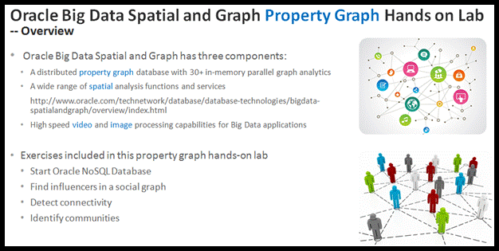
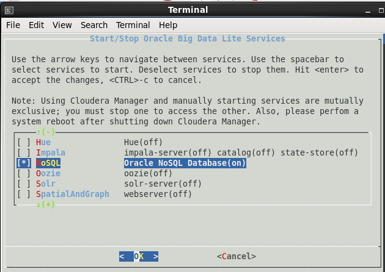
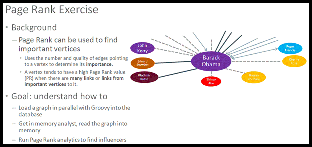
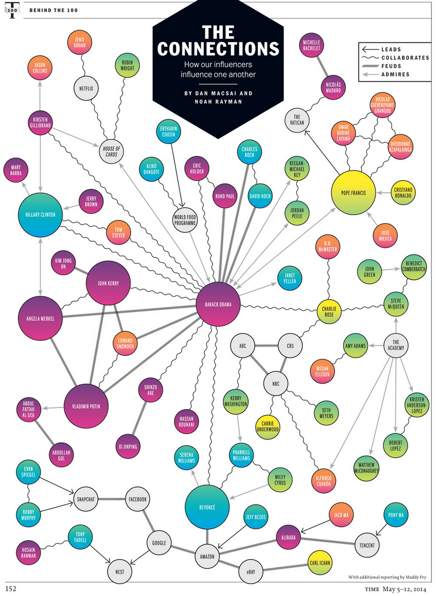
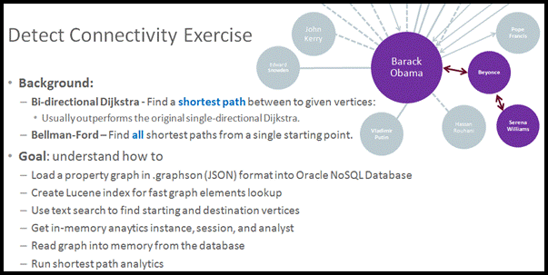
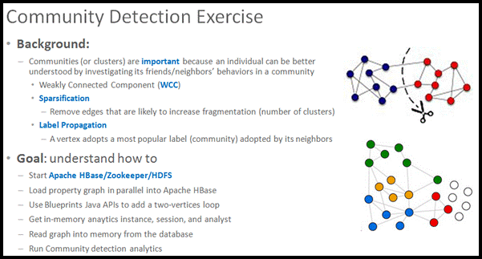
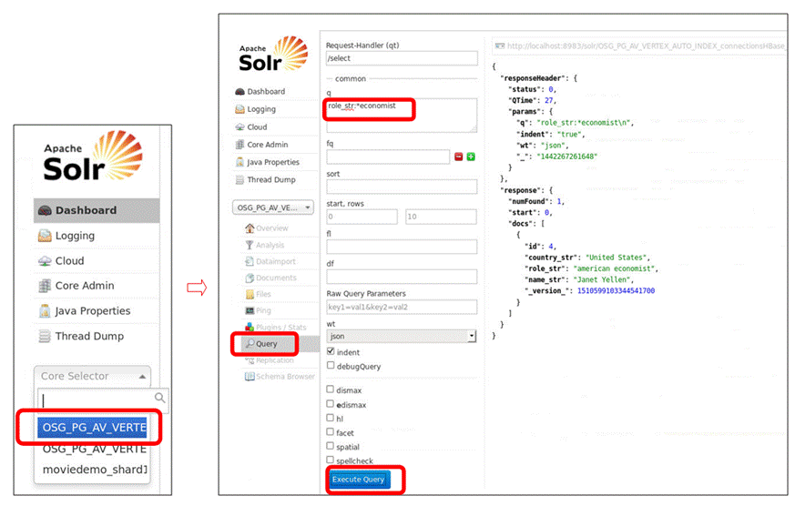

Oracle
Big Data Spatial and Graph Property Graph
Hands on Lab

1
Exercise: Start NoSQL Database & check it is up and running
1.1
Steps to
Start the Oracle NoSQL Database
1.2 Click the Start/Stop Services icon on the Desktop.
1.3 A terminal will pop up showing a list of Oracle Big
Data Lite Services
1.4 Use Up/Down keys on your keyboard to scroll up and
down to find the line containing NoSQL. Note that you may need to scroll down
beyond the first page.
1.5 Make sure that line is checked (one can toggle the
state by pressing Space key). Refer to the following screen shot for what it
looks like on screen.
1.6 Hit Enter and wait for the popped up terminal to
disappear.

1.7
Verification
steps:
1.8 Open the Firefox browser
(there is a Firefox icon on the Desktop).
1.9 Open the following web site and one should see a
"KV ADMINISTRATION" page
http://127.0.0.1:5001/
In the above page, make sure
it says "0 Down" on the page.
1 RepNodes (1 Running, 0 Down, 0 Needing
Attention)
1 StorageNodes (1 Running, 0 Down, 0 Needing
Attention)
2
Exercise: Find
influencers in a social graph

2.1
Get familiar with the example graph data
In the following small social graph about well-known people
and companies, there are four distinct relationships: leads, collaborates,
feuds, and admires.

2.2 Page Rank
PageRank uses the number and
quality of edges to a vertex to determine how important a vertex is. A good
description of PageRank can be found in the following
web page, which you can visit later. Intuitively, a vertex tends to have a high
PageRank value (PR) when there are many links or
links from important vertices to it.
https://en.wikipedia.org/wiki/PageRank
2.3
Start Groovy
Groovy is a powerful language with static-typing and static compilation capabilities. In the following exercise, we use Groovy as an interactive SHELL/Script environment.
NOTE: Please only copy and paste commands in shaded box.
cd
/opt/oracle/oracle-spatial-graph/property_graph/dal/groovy/
sh
gremlin-opg-nosql.sh
2.4
Load "Connections" Graph into Oracle NoSQL Database
//
Provide Oracle NoSQL Database server name and port
server = new ArrayList<String>();
server.add("bigdatalite:5000");
//
Create a graph config that
contains the graph name "connections"
//
KV store name "kvstore", edge property "weight"
to be loaded into
//
in-memory graph, etc.
cfg = GraphConfigBuilder.forPropertyGraphNosql()
\
.setName("connections").setStoreName("kvstore")
\
.setHosts(server)
\
.addEdgeProperty("weight", PropertyType.DOUBLE,
"1000000") \
.setMaxNumConnections(2).build();
//
Get an instance of OraclePropertyGraph which is a key Java
//
class to manage property graph data
opg = OraclePropertyGraph.getInstance(cfg);
//
Set the Degree of Parallelism (DOP) for clearing graph data
//
from the existing OraclePropertyGraph instance
opg.setClearTableDOP(2); // will
return NULL because this
// API has no return value.
// It is expected.
opg.clearRepository();
// remove all vertices and edges
//
OraclePropertyGraphDataLoader is a key Java class
//
to bulk load property graph data into the backend
databases.
opgdl=OraclePropertyGraphDataLoader.getInstance();
vfile="../../data/connections.opv" // vertex flat file
efile="../../data/connections.ope" // edge flat file
//
Set Degree of Parallelism (DOP) to 2 and load in parallel the
//
above property graph data files into the database.
opgdl.loadData(opg, vfile, efile, 2);
opg.getVertices();
// NOTE:
expected output of the above command is a list
// of
vertices in serialized format. An example output line
// is as
follows. Note that you may see a different output.
==>Vertex
ID 78 {country:str:United
States,
name:str:Hosain Rahman, occupation:str:CEO of
Jawbone}
2.5
Get In-Memory Analyst
//
Create in-memory analytics session and analyst
session=Pgx.createSession("session_ID_1");
analyst=session.createAnalyst();
//
Read the graph from database into memory
pgxGraph = session.readGraphWithProperties(opg.getConfig());
//
create a helper function for pretty printing
def p(v) { s1=v.getProperty("name");
\
if (s1.length() > 30) return
s1;
\
s=s1;
\
for (int idx
= 0; idx < 30 - s1.length(); idx++)
\
{ s=s+ "
";};
\
return ("vertex " + s + " id
" + v.getId()); \
}
2.6
Find Influencers
//
Execute Page Rank
rank=analyst.pagerank(pgxGraph, 0.00000001, 0.85, 5000);
//
Get 3 vertices with highest PR values
it = rank.getTopKValues(3).iterator();
\
while(it.hasNext())
{
\
v=it.next();
\
id=v.getKey().getId();
\
pr=v.getValue();
\
System.out.println("Influencers --->" + \
p(opg.getVertex(id)) +
" pr= " + pr); \
}
:quit
·
Expected
output is something as follows:
Influencers
--->vertex Barack Obama id 1
pr= 0.055458..
Influencers
--->vertex Nicolas Maduro
id 60 pr= 0.031347..
Influencers
--->vertex
NBC id
42 pr= 0.025833..
3
Exercise: Detect Connectivity

The algorithms used in this exercise are
based on Dijkstra and Bellman-Ford. For Dijkstra, we adopt an optimized version
called Bi-directional Dijkstra which usually outperforms the original,
single-directional Dijkstra. Dijkstra is used to find a shortest path
between two given vertices. Bellman-Ford, on the other hand, finds all shortest
paths from a single starting point.
3.1 Shortest path on a weighted
graph
To run shortest path in a property graph, edges in that graph
needs to have a "weight" property or a numeric value-based property
that can be used to denote an edge weight.
3.2
Start Groovy
cd
/opt/oracle/oracle-spatial-graph/property_graph/dal/groovy/
sh
gremlin-opg-nosql.sh
3.3 Load Graph (in .graphson format) into Oracle NoSQL Database
server = new ArrayList<String>();
server.add("bigdatalite:5000");
cfg = GraphConfigBuilder.forPropertyGraphNosql()
\
.setName("connections").setStoreName("kvstore")
\
.setHosts(server)
\
.addEdgeProperty("weight", PropertyType.DOUBLE,
"1000000") \
.setMaxNumConnections(2).build();
opg = OraclePropertyGraph.getInstance(cfg);
opg.setClearTableDOP(2);
opg.clearRepository();
//
Load a property graph data in GraphSON format
OraclePropertyGraphUtils.importGraphSON(opg,
"/u02/connections.graphson",
System.out);
opg.getEdges();
// NOTE:
expected output of the above command is a list
// of edges in
serialized format. An example output line
// is as
follows. Your output might be different.
==>Edge
ID 1146 from Vertex ID 65 {country:str:China, name:str:Alibaba, type:str:e-commerce
company} =[feuds]=> Vertex ID 69 {country:str:China,
name:str:Tencent, type:str:mass
media} edgeKV[{weight:dbl:1000.0}]
3.4 Create Lucene based text index
//
Configure index parameters for Lucene
indexParams = OracleIndexParameters.buildFS(1, 4, 10000, \
50000, true, "/u02/lucene-index");
//
Set the index parameters into the OraclePropertyGraph
instance
opg.setDefaultIndexParameters(indexParams);
//
Get ready to create text index for 4 property names
indexedKeys = new
String[4];
indexedKeys[0] =
"name";
indexedKeys[1] =
"role";
indexedKeys[2] =
"religion";
indexedKeys[3] =
"country";
//
create auto indexing on above properties for all vertices
opg.createKeyIndex(indexedKeys, Vertex.class);
3.5 Find starting and destination
vertex
//
Find the starting vertex with text query
//
Pick the first one out of the
matches because
//
there could be multiple matches.
vStart = opg.getVertices("name", "*Obama*",
true) \
.iterator().next();
//
and then the destination vertex with text query
vEnd = opg.getVertices("name", "Serena*", true)
\
.iterator().next();
//
create the same pretty print helper function as before
def p(v) { s1=v.getProperty("name");
\
if (s1.length() > 30) return
s1;
\
s=s1;
\
for (int idx
= 0; idx < 30 - s1.length(); idx++)
\
{ s=s+ "
";};
\
return ("vertex " + s + " id
" + v.getId()); \
}
3.6 Compute shortest path with
Dijkstra
//
Get in-memory analytics instance, create session
instance = Pgx.getInstance();
session = instance.createSession("session_ID_1");
analyst = session.createAnalyst();
//
Read the graph from database into memory
pgxGraph = session.readGraphWithProperties(opg.getConfig());
weight = pgxGraph.getEdgeProperty("weight");
path=analyst.shortestPathDijkstra(pgxGraph, vStart.getId(),
vEnd.getId(),
weight);
//
Are these two vertices connected?
path.exists();
// should return true
//
What is the weight of the path?
path.getPathLengthWithCost(); //
should return 2.0
//
Print out all vertices on the shortest path
it=path.getVertices().iterator();
\
while(it.hasNext())
{
\
v=it.next();
\
id=v.getId();
\
System.out.println("Shortest
path --->"+ \
p(opg.getVertex(id)));
\
}
·
The expected output is as follows:
Shortest
path --->vertex Barack
Obama
id 1
Shortest
path --->vertex Beyonce
id 2
Shortest
path --->vertex Serena Williams
id 35
3.7 Compute shortest path with
Bellman-Ford
weight = pgxGraph.getEdgeProperty("weight");
allPaths=analyst.shortestPathBellmanFord(
pgxGraph, vStart.getId(), weight);
//
Get the shortest path that ends with Alibaba
vEnd = opg.getVertices("name", "Alibab*",
true).iterator().next();
path = allPaths.getPath(pgxGraph.getVertex(vEnd.getId()))
//
Are these two vertices connected?
path.exists();
// should return true
//
What is the weight of the path?
path.getPathLengthWithCost(); //
should return 2001.0
//
Print out all vertices on the shortest path
it=path.getVertices().iterator();
\
while(it.hasNext())
{
\
v=it.next();
\
id=v.getId();
\
System.out.println("Shortest
path --->"+ \
p(opg.getVertex(id)));
\
}
:quit
·
Expected output of the above command line is
Shortest
path --->vertex Barack
Obama
id 1
Shortest
path --->vertex Beyonce
id 2
Shortest
path --->vertex
Amazon
id 37
Shortest
path --->vertex Alibaba
id 65
4
Exercise: Identify communities
in a social graph
Communities
are very important to a social graph because individuals of a community tend to
share a set of common characteristics or exhibit one or multiple common
behaviors. This exercise will explore several community detection algorithms.

4.1 Weakly Connected Components(WCC)
A directed graph G is weakly connected if there is a path
between every pair of vertices of the graph, when replacing all G's directed
edges with undirected edges.
4.2 Sparsification
The sparsification technique adopted by Oracle's property
graph feature looks at all edges of every single vertex in a localized fashion,
and remove those edges that are more likely to, upon removal, increase
fragmentation of the graph. A key goal of sparsification is to increase the
number of clusters in a graph after removing a number of edges from the graph.
4.3 Label
propagation
The label propagation algorithm used by Oracle's property
graph feature initializes every vertex with a unique label and at every
subsequent step updates a vertex's label with one label shared by most of its
neighbors.
4.4 Start Apache HBase
4.5 Click the Start/Stop Services
icon on the Desktop.
4.6 A terminal will pop up showing a list of Oracle Big
Data Lite Services
4.7 Use Up/Down keys on your keyboard to scroll up and
down to find the line containing "HBase"
4.8 Make sure that line is checked (one can toggle the state
by pressing Space key). In addition, find and check lines containing
"Zookeeper" and "HDFS" if they are not already checked.
4.9 Hit Enter and wait for the
popped up terminal to disappear.
4.10
Start Groovy
cd
/opt/oracle/oracle-spatial-graph/property_graph/dal/groovy/
sh
gremlin-opg-hbase.sh
4.11 Load
connections PG graph into Apache HBase
//
Get a graph config that has graph name
"connections" and
//
Zookeeper host, port, and some other parameters
cfg = GraphConfigBuilder.forPropertyGraphHbase()
\
.setName("connections")
\
.setZkQuorum("bigdatalite").setZkClientPort(2181)
\
.setZkSessionTimeout(120000).setInitialEdgeNumRegions(3)
\
.setInitialVertexNumRegions(3).setSplitsPerRegion(1)
\
.addEdgeProperty("weight",
PropertyType.DOUBLE, "1000000") \
.build();
//
Get an instance of OraclePropertyGraph which is a key Java
//
class to manage property graph data
opg = OraclePropertyGraph.getInstance(cfg);
opg.clearRepository();
//
OraclePropertyGraphDataLoader is a key Java class
//
to bulk load property graph data into the backend
databases.
opgdl=OraclePropertyGraphDataLoader.getInstance();
vfile="../../data/connections.opv"
efile="../../data/connections.ope"
opgdl.loadData(opg, vfile, efile, 2);
//
Now add a tiny loop of just two vertices, vx and vy, with
//
Blueprints Java API
vx = opg.addVertex(1234l);
vy = opg.addVertex(1235l);
//
Add an edge from vx to vy,
and another from vy to vx
e1=opg.addEdge(3000l,
vx, vy, "likes");
e1.setProperty("weight", 1.1d);
e2=opg.addEdge(3001l,
vy, vx, "likes");
e2.setProperty("weight", 1.5d);
opg.commit();
4.12
Get in-memory analyst
//
Create an in memory analytics session and analyst
session=Pgx.createSession("session_ID_1");
analyst=session.createAnalyst();
//
Read graph data from database into memory
pgxGraph = session.readGraphWithProperties(opg.getConfig());
4.13 Run
community detections
//
Run WCC algorithm
partition = analyst.wcc(pgxGraph)
partition.size() // should
be 2
//
Get the first community (collection of vertices)
vertexCollection = partition.getPartitionByIndex(0);
//
Run Label Propagation
partition = analyst.communitiesLabelPropagation(pgxGraph)
//
How many communities do we have?
partition.size()
//
Get the first community by ID
vertexCollection = partition.getPartitionByIndex(0);
· An example
output of the above command is as follows. Yours might be different:
==>PgxVertex with ID 77
==>PgxVertex with ID 78
·
Now we have the communities detected, you can
run the following to look into a community that has an entity of interest.
//
Look into the community that has the vertex Alibaba
v
= opg.getVertices("name", "Alibaba").iterator().next();
vertexCollection = partition.getPartitionByVertex(pgxGraph.getVertex(v.getId()));
//
Get details of the 4 vertices in this community.
//
"l" below indicates a Long integer
opg.getVertex(69l);
opg.getVertex(68l);
opg.getVertex(65l);
opg.getVertex(71l);
:quit
5
Appendix
5.1 Quick
fix when Groovy is acting up
The Groovy shell environment may get into a weird state when illegal or invalid input is provided. An easy way to fix this is to hit Enter a couple of times, type in :clear, hit Enter again and finally verify by typing in "1+1". Make sure that Groovy responds with 2. As an illustration,
opg-hbase> a = new Class_That_Does_Not_Exist(
opg-hbase>
opg-hbase> "
groovysh_parse: 22: unexpected
char: '"' @ line 22, column
1.
"
^
1 error
Display stack
trace? [yN]
opg-hbase>
opg-hbase>
opg-hbase> :clear
opg-hbase>
opg-hbase> 1+1
==>2
opg-hbase>
5.2 "Groovier" style
Most of the code snippets in this document are Java based so
that it is quite straightforward to copy and paste them into a Java code. One
can, however, use a more Groovy oriented syntax.
For example,
it=path.getVertices().iterator();while(it.hasNext()) {v=it.next();id=v.getId();System.out.println("Shortest
path --->"+p(opg.getVertex(id)));}
can be written as:
path.getVertices().collect {
"Shortest path ---> " + p(opg.getVertex(it.id))
}
5.3 Query an existing Solr-based property graph text index
This virtual machine
comes with a property graph stored in Oracle NoSQL Database (and also Apache HBase) with a pre-configured text index for several vertex
attributes. The text index itself is stored in SolrCloud.
In the following steps, we are going to start Solr/HBase/Zookeeper/HDFS, pick a Solr
core (index) for all the vertices of that property graph, and finally query
using Solr's web interface.
5.3.1 Click the Start/Stop Services
icon on the Desktop.
5.3.2 A terminal will pop up showing a list of Oracle Big
Data Lite Services. Check Zookeeper, HDFS, HBase, and Solr. Hit Enter. Wait for the pop-up terminal to
disappear.
5.3.3 Open the following web page with Firefox. One should
see the Apache Solr icon on the top left corner.
5.3.4
Pick one of the pre-created OSG_PG
cores by clicking on the Core
Selector drop-down menu, select and
click on the first entry with name containing "OSG_PG_AV_VERT". Scroll down and click on Query.
A query interface shows up on the right-hand side. Type in "role_str:*economist" in the first text box under
"---- common -----". Scroll down and click Execute Query. You should
see one match that contains Janet
Yellen, which is a vertex (with id=4) defined in the property graph. This
vertex has a few indexed properties including country="United
States", role="American economist", and name="Janet
Yellen". The suffix "_str" denotes
that the data type of the property value is String.

Challenge question: can you perform a faceted search using field name
"role_str" as a facet?
Hint:
1) go to the "q" text box, type in "*.*"
2) go to the "facet.field" text box, type in "role_str" 3) click Execute Query
and you will see facet counts
at the bottom of the page.
5.4 Create an additional Solr-based text index for property graph data
5.4.1
Click the Start/Stop Services
icon on the Desktop.
5.4.2
A terminal will pop up showing a list
of Oracle Big Data Lite Services. Check Zookeeper, HDFS, HBase, and Solr. Hit Enter. Wait for the pop-up terminal to
disappear.
5.4.3 Open the following web page with Firefox. One should
see the Apache Solr icon on the top left corner.
5.4.4 Start Groovy
cd
/opt/oracle/oracle-spatial-graph/property_graph/dal/groovy/
sh
gremlin-opg-hbase.sh
5.4.5 Create an auto index for a new vertex key (attribute
name) using Data Access Layer (DAL) Java APIs
//
Get a graph config that has graph name "connectionsHBase"
and
//
Zookeeper host, port, and some other parameters
cfg = GraphConfigBuilder.forPropertyGraphHbase()
\
.setName("connectionsHBase") \
.setZkQuorum("bigdatalite").setZkClientPort(2181)
\
.setZkSessionTimeout(120000).setInitialEdgeNumRegions(3)
\
.setInitialVertexNumRegions(3).setSplitsPerRegion(1)
\
.addEdgeProperty("weight",
PropertyType.DOUBLE, "1000000") \
.build();
//
Get an instance of OraclePropertyGraph which is a key Java
//
class to manage property graph data
opg = OraclePropertyGraph.getInstance(cfg);
//
Run a text query against the existing text index (configured to use Solr)
//
to find vertices with key="role" and value
//
string that ends with "economist"
//
A single match (Vertex ID 4) with name="Janet
Yellen" is expected.
opg.getVertices("role",
"*economist", true);
At
this moment, we do not have a text index on "company" key. Hence, the
following query has 0 matches.
//
Find all vertices that have a "company" K/V attribute
opg.getVertices("company",
"*", true);
Now,
we are going to build a text index for that "company" key of
vertices.
// Set the necessary parameters
to build a Solr based text
index
//
szSolrServerUrl = "bigdatalite:2181/solr"
szNodeSet =
"bigdatalite.localdomain:8983_solr"
indexParams = OracleIndexParameters.buildSolr("opgconfiglowercase", \
szSolrServerUrl,
szNodeSet, 15 /*ZKTimeout*/,
1 /*nShards*/,
\
1/*nRepF*/, 1/*shardsPerNode*/, 1/*numConnections*/, \
10000/*batchSize*/,500000/*commitSize*/, 20/*writeTimeout*/);
opg.setDefaultIndexParameters(indexParams);
// Create an automatic
text index for "company" key
opg.createKeyIndex("company",
Vertex.class);
Rerunning
the same query will yield many more matches.
opg.getVertices("company",
"*", true);
Finally,
drop the newly created text index for "company" property (so that
this exercise can be repeated).
opg.dropKeyIndex("company",
Vertex.class);
:quit
Oracle Big Data Spatial and Graph Property Graph Hands
on Lab, 2015